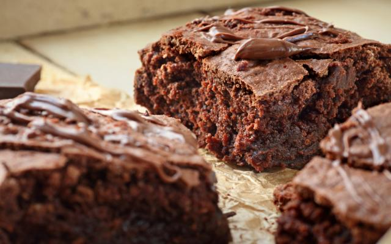
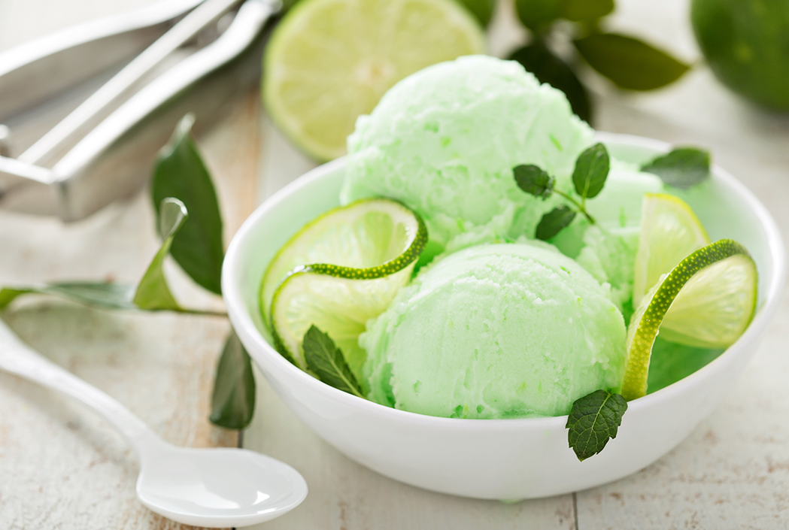

Receitas Doces
Cueca Virada
Tempo de preparo: 30 minutos
Rendimento: 50 porções
Ingredientes
- 3 xícaras de chá de farinha de trigo
- 1/2 xícara de chá de leite
- 1 ovo
- 1 colher de sopa de vinagre
- açúcar e canela misturados para polvilhar
- 6 colheres de sopa de açúcar
- 1 pitada de sal
- 1 colher de sopa de margarina
- 1 colher de sobremesa de fermento em pó
- óleo para fritar
Modo de Fazer
- Misturar os ingredientes até ficar uma massa que não grude nas mãos (se necessário, colocar um pouquinho
mais de farinha de trigo).
- Abrir com rolo em superfície enfarinhada.
- Cortar tiras no tamanho desejado.
- Fazer um corte no meio e passar uma ponta por dentro virando.
- Fritar em óleo não muito quente.
- Descansar sobre papel-toalha.
- Polvilhar açúcar e canela
Brownie de Cacau
Tempo de preparo: 50 minutos
Rendimento: 10 porções

Ingredientes
- 10 colheres (sopa) de margarina (se usar margarina com sal, não coloque o sal pedido na receita)
- 3/4 de xícara (chá) de cacau em pó (cacau 100%)
- 2 ovos grandes gelados
- 1/2 xícara de nozes, castanhas ou amendoim
- 1 e 1/4 de xícara de açúcar
- 1/2 colher (chá) de sal
- 1/2 xícara de farinha de trigo
Modo de Fazer
- Preaqueça o forno a 160 graus.
- Forre uma forma quadrada de 20 cm com papel manteiga.
- Em uma tigela própria, misture a manteiga, o açúcar, o cacau e o sal.
- Coloque 30 segundos no micro-ondas, mexendo em seguida até que a massa esteja uniforme e brilhante.
- Com a massa morna junte os ovos, um a um.
- Bata bem a massa com uma colher de pau ou espátula.
- Adicione a farinha e misture muito bem.
- Bata a massa com a colher de pau ou espátula fazendo movimentos circulares vigorosos.
- Se estiver usando as castanhas ou pedaços de chocolate, misture em seguida.
- Espalhe o brownie na forma, alise o topo e leve ao forno por cerca de 30 minutos, ou até que o topo esteja
com uma casquinha crocante.
Sorvete de Limão
Tempo de preparo: 20 minutos
Rendimento: 5 porções

Ingredientes
- 1 lata de leite condensado
- 1 lata de creme de leite
- 1/2 xícara de suco de limão
- raspas de limão
Modo de Fazer
- Em um liquidificador, bata o leeite condensado, creme de leite e o suco de limão.
- Acrescente as raspas e misture bem.
- Despeje em um recipiente, cubra com um filme plástico e leve ao freezer por cerca de 4 horas.
- Retire, mexa bem com uma colher e retorne ao freezer, deixando por cerca de 12 horas.